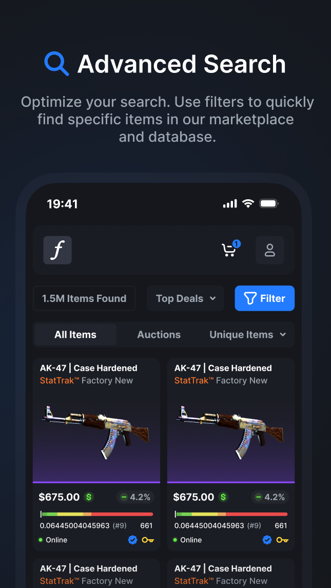

装了一年CSFloat，从蹲货党变全职卖家的那些变化
从当初图便宜装下这个CS2饰品交易工具，到现在每天离不开，聊聊一年用下来哪些地方越用越顺手、哪些地方慢慢显露出问题，以及几个当初完全没想到会成为刚需的功能。
开头：当初是怎么装的
坦白说，当初CSFloat下载了客户端，纯粹是因为Steam市场的手续费实在肉疼——5%的平台抽成加3%的Steam税，一件中等价位的皮肤到手就要砍掉小一成。那时候身边几个玩CS的朋友早就不用Steam原生市场了，推过来一个叫CSFloat的官网站点，说费率低、检索强，装了试试。
试了第一笔，省下来的手续费刚好够买下个月的加速器。就这样留了下来，一留就是一年多。从最早的"偶尔蹲个货自己用"，到后来挂点东西卖，再到现在基本把Steam市场闲置了——这个工具在我手上的角色变化，比我预想的要大得多。
越用越顺手：从别扭到习惯的几个拐点
刚上手那会儿最不适应的是浮点这个概念。Steam市场只给一个笼统的"崭新出厂""略有磨损"，但CSFloat把它拆到小数点后六位的精确值，还有一张世界排名。第一次看到商品卡片上那个0.038217旁边跟着"全球TOP 0.3%"，我愣了半天——原来同一件崭新出厂的AK，品相差距能拉开三位数的价差。
不习惯归不习惯，但这个东西用了几次就回不去了。 Steam市场里挑东西只能靠眼睛，拍回来才发现磨损比图片上看着明显。现在每次下单前先看浮点值、扫一眼排名、再比对模板截图，验货这步的翻车率直接从三成降到了不到一成。
第二个让我觉得"这设计真懂用户"的地方是移动端的完整度。一开始以为App就是个网页壳子，登录看看价格就行了，没想到高级筛选器、FloatDB数据库浏览、甚至卖家端的自动报价全都搬了过来。有次早上赶地铁，手机推送响了——之前蹲了三天的一把弯刀有人挂了一口价——在地铁上完成了搜索、复核品相、付款，到站的时候货已经在Steam库存里了。这件事之后我基本不在电脑前蹲货了，碎片时间全交给手机。

第三个拐点是印花磨损。以前买带印花的皮肤只看图案好不好看，现在会特意把每张印花的磨损值单独核对一遍——因为刮印花是不可逆操作，全刮到崭新之间可能差出一倍的价格。有次收了件主打14卡托贴纸的枪，买回来才发现其中两张被刮过，平台不给退，那笔单直接记到了亏损里。现在验货流程里，印花状态是单独过的一关，再也没踩过同样的坑。
越用越烦：当初没发现的问题
好的说完了，也说点实在的。
第一个烦的是数据库的查询盲点。FloatDB号称收录了11亿件皮肤，但经常出现"我库存里这件枪怎么搜不到"的情况。官方给的解法是装扩展浏览一次，物品就会入索引——等于让我每次想查自己东西之前先当一回爬虫的人肉种子。这个操作做过几次之后我就放弃了，搜不到就搜不到，大不了不用那个功能。
更烦的是机器人风控。有段时间我想批量拉一些数据做自己的品相分析，结果连续两次被标记为机器人，搜索直接被拦。找客服想解，得到的回复是自动系统硬规则，人工解不了——意思就是你被误判了也白误判。后来学乖了，把搜索频率降到每分钟几次，再也没触发过，但那种"被系统盯着"的感觉一直没完全消除。
还有个小问题是交易时限的压力。卖家的发货时限是两小时，超时吃罚单。听起来宽裕，但有时候遇到Steam服务器抖动、令牌确认卡住，真赶不上。CSFloat提供了自动创建交易报价的功能，能用，但它只是帮你省了手动开Steam找物品的几步，最卡的令牌确认那一下还是要自己点。我有两次差点超时，一次是半夜爬起来确认的，一次是在外面借朋友的手机登了Steam。
离不开的功能与碰都没碰过的功能
一年下来，有两个功能已经成了我每天打开必看的：推送通知和在线状态。
推送不只提醒新订单——更有用的是蹲货时的"关注款式到货"。我设置了几款长期想收的枪型和品相范围，一旦有人挂出来就推到手机。这比之前在Steam市场刷关键词高效太多了，Steam没有这个功能，只能自己蹲。在线状态更隐蔽：CSFloat的商品卡片显示卖家是否在线，我后来才搞明白，这个在线指的是"有没有在已登录设备上打开平台"——App常驻后台就等于全天在线。挂着App不耗多少电，但列表点击率和买家议价回应速度肉眼可见地变快了。
反过来，开发者API我到现在也没碰过。说实话想过写点脚本自动化，但一想到风控那茬就算了——没必要为了省那点时间把自己账号搞进黑名单。还有FloatDB的高级查询语法，看了CSFloat文档里写得很细，但日常用筛选器够用了，没那个闲心去学一套新语言。
观感修正：当初的判断哪里变了
说个反直觉的：我一开始以为CSFloat是个"Steam市场替代品"，但现在觉得它更像是个"Steam市场增强器"。交易确实走CSFloat自己的撮合，但Steam令牌这步绕不开——说到底它还是建立在Steam经济之上的。真正把我留住的不是"换了个市场"，而是它在Steam做不好的地方做得足够好：精确的品相数据、移动端的完整闭环、还有比Steam低得多的费率。
另一个变化是对"自动化"的看法。刚装的时候觉得手动验货、手动确认报价挺麻烦，想用脚本省事儿。但那次被风控标记之后反而觉得，CSFloat在自动化上的保守是对的——如果随便能被脚本爬爆，那我们这些手动买卖的小玩家反而活不下去。手动虽然笨一点，但至少公平。
去留结论
会不会卸载？目前不会。费率低、数据准、移动端好用，这三条摆在那儿，没理由走。Steam市场我偶尔还是会上去看看，但基本只看不买——手续费实在接受不了。
什么信号出现会考虑换？第一是费率涨，涨到和Steam差不多甚至更高的话，那所有理由都不成立了。第二是风控变得更严，正常使用也频繁触发标记——现在偶尔低频搜几次还没事，但如果哪天日常搜东西也被拦，那这工具就没法用了。第三是移动端砍功能，App如果哪天退化成只能看价格的网页壳子，那我在碎片时间蹲货的习惯就得改回去，但这基本不可能——移动端是它差异化竞争力的核心。
总结一下的话，一年用下来，它没有让我变成什么顶级卖家，也没带我暴富——但它让我做这件事的时候少了很多原本该有的麻烦。对普通玩家来说，这就够了。这套整理资料我放在了开源仓库里，主仓库在GitHub，国内访问的话Gitee和GitCode也有同步副本，哪个顺手看哪个。